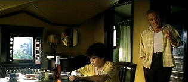

|
Hearts in Atlantis (SE) C+, B+ |
|
Warner/2001/101/ANA 2.35 |
Have you noticed that Director Scott Hicks' last
three films (Shine
and
Snow Falling on Cedars are the other two.) are each formed from a
flashback perspective. It's a time-honored device and Hicks does it well.
Hearts in Atlantis opens as a middle-aged Bobby Garfield receives a
package from a law firm. From there, it's back in time, as Bobby's memories
are rekindled.
Young Bobby Garfield lives in an old house on a
residential street in a Connecticut town pretty close to Bridgeport. It's
tough making ends meet for single mother Elizabeth. A border seems like a
partial answer to the problem. Enter Ted Brautigan, who rents the room
upstairs. It's no surprise when Bobby and Ted form a bond. The mystery is who is Ted Brautigan? Where did he come from?
"Some place not as nice as here. Up North," so he says. Ted has a strange
and magical prescient powers to which Bobby is sensitive.
 |
| Brautigan
waxes eloquent to Bobby. ©Warner |
The script by William Goldman from a Stephen
King novel is a mixed bag. It's confusing at times, sensitive at others, and
finally rather frustrating. The kid romance is a little much and Carol looks
and acts a lot older. "Your father never met an inside straight
he didn't like" is an excellent line of dialogue delivered by young Bobby's
mother Elizabeth. It goes a long way into understanding the bitterness and
selfishness of the character.
Memory forms the most important element of Hearts in
Atlantis. The well-told Bronko Nagurski football story that Ted tells Bobby
plays up the importance of memory. There's are wise life lessons within the
script like wishing can't make it so and reality is what reality is. A kiss by which all others will be judged is a difficult moment to
capture, but it's reasonably done in Hearts in Atlantis. Ultimately, Hearts of Atlantis is a little too pat without being pat. Hicks
seems to want to tie up the knots yet maintain the mystery.
Anthony Hopkins makes a strange Ted Brautigan. He's
nervous and distant. He's delivers his kiddos with less than convincing
dialogue delivery. The wisdom of Ted Brautigan is somewhat skewed. "Yeah, kids always think
farts are funny." Hopkins brings a sadness to Brautigan, and his
pronouncements may seem harmless on the surface but they are hurtful and
even dangerous. Hope Davis is quite convincing in a role of limited range as
Elizabeth Garfield. Elizabeth is a pretty wretched mother, even an unredeemable
character. Young Anton Yelchin carries the film on his slight shoulders
quite well as the young Bobby. Mika Boorem is charming as Carol, though, as
noted, a tad too mature.
Good cinematography choice to make the past more saturated and warmer.
It's like the past past is filtered through the memory and intensified. Contemporary music of the era is important in setting the scene and it's
good fun. Production details are very good. There's some cheap photographic affectation to promote tension.
Hearts in Atlantis is one fine
looking DVD. Images are very sharp despite the warm, filtered look that
Hicks goes for. You can even read the news clipping that Bobby
Garfield receives with the baseball glove. There's a little bit of jitter in some of the fine detail. Slight peak
transitional ringing, but minor. Shadow detail is somewhat soft and kind in keeping
with the warmth of the flashback. Nice glossy backgrounds and garish colors in the
Fair sequence. Deep, dark, yummy blue skies. Overall color range is
excellent with a nice range of skin tones. The Dolby Digital 5:1 surround
handles the score to perfection. Good balance between dialogue and music.
Surround information is accurately located. Good sound editing to refer to the Bronko Nagurski story.
The special edition features a full length audio commentary
by director Scott Hicks. Hicks also does an approximately thirty minute
video interview with Anthony Hopkins that is excellent.
|
|
|
|

The
Movie Poster Archive include extensive poster images from the films of stars like Susan Hayward,
Kirk Douglas, Katharine Hepburn and many more. Our featured star is Spencer Tracy.

Click on the DVD MIA symbol for
profiles of DVDs missing in action.
Add films to the
DVD MIA Master List by filling out
a simple form.
Click Here

 Have you visited
Home Theater
Talk lately? One of the friendliest places on the Net for Home Theater and DVD discussion, you
can get help for installation problems or simply share your opinions with other Vidiots. Have you visited
Home Theater
Talk lately? One of the friendliest places on the Net for Home Theater and DVD discussion, you
can get help for installation problems or simply share your opinions with other Vidiots.
 Jim
Doolittle Jim
Doolittle
ISF Instructor. Premier calibrator and expert front projection system setup technician in the
Boston area.

DVD links, information about Web specials, news, Site reviews.

Comprehensive DVD review database. Easy to use
interface with specific region searches.
MRQE
Find reams of movie and DVD reviews at the Movie Review Query Engine, a index of reviews appearing on the Internet.

Selections from the
Feature Archive include articles on Akira Kurosawa,
Frank Darabont,
Blonde Bimbos,
Hollywood Street Gangs, or
Vietnam: The Hollywood Pariah, and many more..
Stanley's Kramer's vision of film personified taste and dignity. He was truly a
Hollywood Class act. Click on the image for a
brief bio and poster images.
|